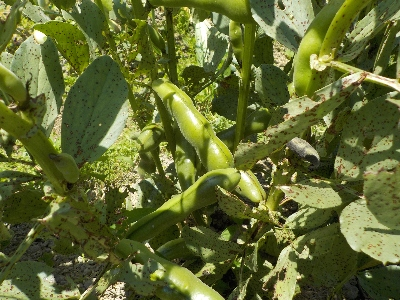
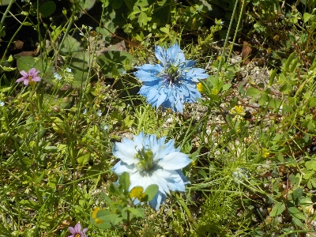
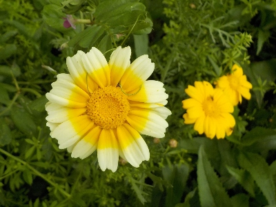

遊びで植物を育てよう
2024/05/25
空豆を収穫して食べました。

そら豆が出来たので湯がいて食べました。
美味しい。
冷凍して保存食にもしますが、旬のうちにドンドン食べたいと思いました。
【5月TOP】
【日記TOP】
【園芸TOP】
2024/05/25
矢車草が野生化してます。

鉢とかプランターで育ててた矢車草ですが 、タネが落ちて雑草化してました。
草丈が低いので野生化しても生存率は低いんだろうな。
【5月TOP】
【日記TOP】
【園芸TOP】
2024/05/18
オーニソガラムって名前は覚えれない。

毎年咲いててキレイだなとは思って見ていますが、名前は何だったかな？
ネットで画像検索したら「オーニソガラム」って出ました。覚えにくい名前なので、明日には忘れているんだろうな。
【5月TOP】
【日記TOP】
【園芸TOP】
2024/05/05
見慣れないきれいな花が咲いていました。

黄色い花が咲いてました。菊のようなカモミールのような。
検索したら春菊と出ました。春菊の花ってキレイですね。春菊は1年草だそうなので、この後枯れますね。
【5月TOP】
【日記TOP】
【園芸TOP】
過去の日記
【2024年5月の日記】
【2023年5月の日記】
【2022年5月の日記】
【2021年5月の日記】
【2020年5月の日記】
【2019年5月の日記】
【2018年5月の日記】
【2017年5月の日記】
【2016年5月の日記】
【2015年5月の日記】
【2014年5月の日記】
【2013年5月の日記】
【5月TOP】
【日記TOP】
【園芸TOP】
畑仕事じゃないよ。
【おいしいものを食べよう。】【しっかり寝よう。】
【ソロ活をしよう!】【季節感のあることをしよう。】【動画視聴はほどほどに。】【当サイトの全てのコンテンツは無断転載禁止です。】